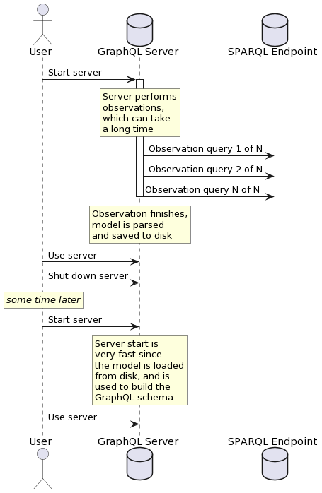

Model Checkpointing
The observation phase can take quite a long time, and it is undesirable to have to wait for the entire observation phase to happen again every time you want to start the GraphQL endpoint.
Therefore SPARQLess allows you to use the following options to save the generated data model to disk, and then later reuse it instead of carrying out observations again.

interface ModelCheckpointConfig {
loadModelFromCheckpoint: boolean;
saveModelToFile: boolean;
overwriteFile: boolean;
checkpointFilePath: string;
}
checkpointFilePath points to the file which will be used
to store/load model checkpoints.
If saveModelToFile is set to true, the model will be saved
to the configured file after it is built from the observations.
If the file already exists and overwriteFile is set to false,
the file will not be overwritten by the new checkpoint.
If loadModelFromCheckpoint is set to true, at startup,
SPARQLess will check whether the checkpoint exists.
If it does, then it will use the model checkpoint rather than
carrying out observations again.